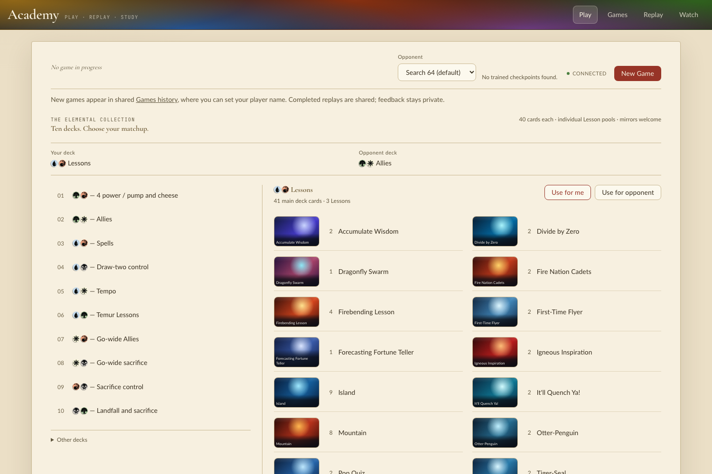
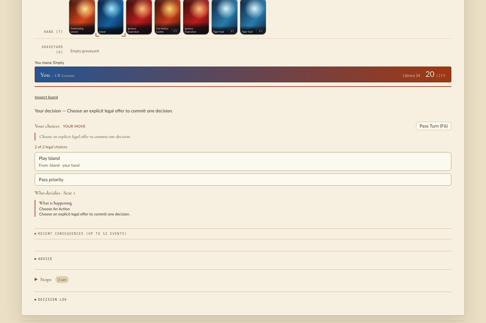
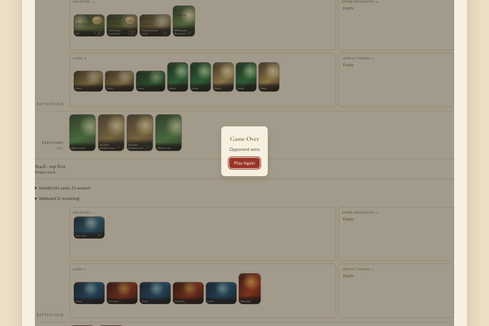

Build under test: branch head 79aa9881e. Release extension rebuilt from it and installed into
managym/_managym.cpython-313-darwin.so (the previous build predated the last commits).
12 games each of tla-baseline-v1, ur-lessons-vs-gw-allies, elemental-world-v2,
elemental-temur-v1 and elemental-sacrifice-v1, random legal actions, both seats' observations read at every decision.
60/60 games finished; 436 distinct tokens seen (Ally, Clue, Human Soldier, Food, Treasure, Ran and Shaw) token outside battlefield/stack at a decision: 90 sightings, all Treasure in a graveyard
Each Treasure case is a Modal decision (choose the mana color) right after sacrificing it for mana; the next
decision is a priority decision and the Treasure is gone. Mana abilities don't wait for priority and SBAs only run before
priority (CR 704.3), so this is correct. The SBA logic is the same as before for tokens (the branch only adds the spell-copy arm).
Constructed decks via PlayerConfig(..., world=WORLD_SETUP): 4 Fire Lord Azula, Lightning Bolt, Firebending Lesson,
Combustion Technique, Fists of Flame, Spectral Sailor (flash), UBR lands. Scripted policy attacks, holds Sailors for combat, casts spells.
150/150 games finished copies seen on the stack: Combustion Technique 8, Firebending Lesson 9, Fists of Flame 13, Lightning Bolt 9 Spectral Sailor tokens on the battlefield: 47 sightings (permanent-spell copy became a token, CR 111.12) token or copy outside battlefield/stack at a decision: 0 more non-token copies of a card than the deck holds: 0
./scripts/play --port 18731 --frontend-port 18732; ACADEMY_PLAY_READY named the rebuilt cp313 module.
Headless Chromium: first visit, New Game, then clicked action-panel offers until the game ended (four games).


Games ran to the "Game Over" dialog with no page or console errors. The GW opponent's Ally token renders on the battlefield (attacking 3/3) and graveyards hold only cards:


Nothing in the product needed fixing. Added the engine-scenario route to .lf/skills/qa.md.
is_token
(TriggerCondition::PutIntoGraveyard and Card::become_copy_of) onto the kind.